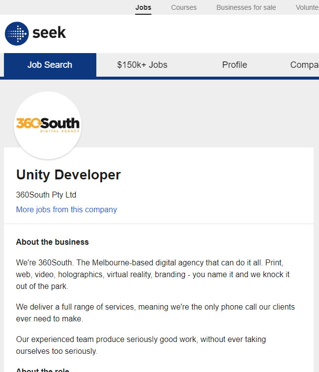

Personal Information
I am glad to share some information about myself to everyone. My name is Wenjie Fan, that is my Chinese name. My English name is Oliver which was given by my foreign teacher when I studying in China, and it accompanied me for such a long time. S3649505 is my RMIT student number. If you want to contact me you can send the email to s3649505@student.rmit.edu.au or fanwenjieau@163.com, both are working. So just like what I write before, I come from China, I am a Chinese young man, Chinese is my first language, but I am trying to study English as hard as I can so that I can make some different and good friends. Even though I had been studied for 12 years in China, I have not finished high school, I spent a half year to study IELTS and got the standard score then came out to Melbourne alone, prepared one year for university study in Trinity. My favourite thing is gaming, any kinds of game can attract me, for computer game, I fall in League of Legends, OverWatch, Apex Legends and Dota Auto Chess, for sport game, I enjoy playing basketball with friends, for musical instrument, I practice the guitar every day to expand my music library, till now I can play Faded and some Chinese songs. I hope to own a cat or a dog in the future, not now, because I even can not take care of myself perfectly.
- Student name: Wenjie Fan(Oliver)
- Student number: S3649505
- Email address: s3649505@student.rmit.edu.au or fanwenjieau@163.com
Interest in IT

When I was a little boy, that was my first time to see a phone game in my uncle's Nokia phone. The game controls a basketball and lets it through different levels safely, you can push the home button to let the ball up or down, it is similar with baby bird, but the ball is "walking" along the ground, the wall. Although it seems is an easy and boring game, it indeed fixes my curious about different and new area games. There is a different feeling with going outside playing with friends, it feels more relaxing because you can play the game anywhere and any way you like, no limitation, it does not need Wi-Fi or data at that time. Since that, I started to focus on more different and new games.
It is hard, to tell the truth, but I have to admit that the reason I choose to study in RMIT is I failed the exam in Trinity which means I can not get into Melbourne University, I need six more marks to be admitted by Mel University. Furthermore, it is impossible to re-read the foundation study for one year and prepare for the examination again, that will waste tons of time. Therefore, after strongly recommended from my family, teachers and friends, I come to RMIT to continue my university career.
During the time I study here, I am expected to learn how to use IT effectively, using it to design a program successfully, becoming a programmer.
Ideal Job

I enjoying playing games, not just for fun but also to experience a different world, although it is a virtual world. Based on this, to design a game becomes the only thing I want to do. This position, Unity Developer, provides a platform and teamwork environment to help you to create and design the game you wanna produce. Besides, there are several reasons why it appeals to me a lot. First, I played lots of games designed by this game engine(Unity), like Hearthstone, Inside, CrosseFire... and all of this game is fantastic, I still play these games nowadays. Second, it provides a comprehensive service to help freshers, it saves a lot of time. Third, the IT project has a good prospect than other jobs, and make your hobby becomes a job is ingenious beyond description. To be hired by this enterprise, I should contain the following conditions. First of all, I should have more than three years of experience in Unity3D and C# work. Then, I have to write a clean code easily and understand, operate others' programme without pressure. Except this, I also need a strong personal portfolio to support my work. However, if I have Flutter, Vuforia, AR Kit and Steam VR experience, I can be hired preferentially. But the fact is I have none experience of above, I am pure fresher in front of this job, so during the years I study in RMIT, I will try my best to gain the skills which are helpful for my ideal job as best as I can. For example, I can find some relational and part-time job while I'm studying at school so that I can get the experience and also will not fail my study. During the time I study here, I am expected to learn how to use IT effectively, using it to design a program successfully, becoming a programmer.
Seek for Job.

Personal Profile

The result of the Myers-Briggs test shows that I am a "Defender" person. "Defenders are true altruists, meeting kindness with kindness-in-excess and engaging the work and people they believe in with enthusiasm and generosity."
The result of the learning style test presents that I'm a "Visual" learner. I always combine things with a picture to help memorize and learn it.
I got 54 on extroversion, 62 on emotional stability, 71 on agreeableness, 76 on conscientiousness, 3 on intellect/imagination.
When the first time I saw these results, the only thing comes to my mind is I am a nice and kind person, my nature and morals are good. That's what I am delighted. But after a second when I saw the shortcomings of my personality, I knew that I can not show my kindness to everyone, be a kind person is a good thing, but sometime your "weakness" could be taken used by others' lies. I need to recognize the person's personality and decide whether should I be kind to him/her.
If I'm going to work with my team, the most important thing for me is to seek the goal of our team, just finish my part as best as I can and try to get along with my teammates as kind as I can. This is what I usually do so the results do not affect me a lot while I am working with my teammates. Because of I always the one who lacks imagination and my teammates always can find that thus my work is not so hard.
Based on these, when I am trying to set up a group, I will introduce myself specifically, like I'm poor in imagination, I'm not a creative person, and tell them I'm glad to help them on the other fields.
Project Ideas

It is my pleasure to introduce my ideal project, I want to create a game that combines FPS and MOBA model together. Even though it has already existed and is known as Smite. So this game will contain first-person shooting(FPS) and multiplayer online battle arena game forms together(MOBA). The users can experience both FPS game's exciting and MOBA game's strategy at the same time. The only way to win is to destroy the enemies' nexus crystal, before this, you have to push the turrets those in front of the crystal. To be more fair and excited, this game will have 5 lines on the map rather than 3 lines, as usual, all the fight is to get closer to winning this game.
According data from websites, for FPS game, there are 2,949,950 players on PUBG, 601,881 players on CS:GO and 99,110players on Rainbow Six Siege, for MOBA games, there are over 100 million players on LOL and over 13 million players on Dota 2, so the FPS and MOBA games have a enormous market. Depend on these data, if I link FPS and MOBA together, the amount of player could achieve the desired results.
Seek for FPS Player Data.
Seek for MOBA Player Data.
I have no idea about this game's name so just call it "O". At the start, 10 people choose the position they want, we could provide 30 variable characters, and then they born on the map with teammates, a group of 5. like what I mentioned above, O will have 5 lines for more competitive, this will be more challenge for the player, because of the FPS game's feature, their attack could miss if they do not have a good marksmanship, so to avoid lose battle from this, they have to make good use of the ability of dodge and the character's skills to fight back. Except fighting with enemy players, they also need to kill minions and push turrets for the farm, but they will not get too much money from this. There also setting jungle areas for farm safely when they can not beat the enemy on the lane. Extra, they could change the line with teammates to beat a player who played on the same level for better game experience. It hears like that the game will stay in the deadlock, everyone just fights with the same level player, nobody can push forward. However, it is wrong, to urged and stimulated players, the system will drop the gold box at the mid lane every 10 minutes, there will have 5 thousand gold inside. But to gain this giant treasure, they will fight as a team, this will test their teamwork and cooperate ability. After they won the fight, each person at the same team will gain 1 thousand gold and they also can push the mid lane's turret. So every time the gold box will breakout the deadlock and speed up the game. In spite of the other team lose the fight, but they could get more money if they can kill the enemy and this reward only for once since the other team gained the gold box. To vest more colourful and freshness, every time the player purchases the item in the store will update their weapon's outlook, to attract the player's eye bow. Additionally, we will also detection the cheating and malicious abuse to provide a clean and harmonious atmosphere for the player, our customer service will be positive to help players with any troubles.
Because the characters' appearance, skills and the complexity of the map is the main element of this game, it will need a functional game engine to achieve. Therefore, Unity3D, 3DGame Studio and Unreal Engine are some good choices. Apart from that, it has some requirements for the hardware to test and operate, so we can find out the lowest hardware's type to make sure this game can run smoothly, like what CPU will be needed, how much internal storage will be required and so on. I plan to use C++ language which is used by League of Legends.
I need a fantastic imagination and a bold attempt when I use 3D modelling to design a character. Besides, it is important for me to control how to write a programme through a clean and logical code, and I need a good lead ability to lead my team.
As a different game contains FPS and MOBA model together, it should attract lots of players, so the outcome will not be so bad. But it must exist some troubles, like some character's mechanics may not be balanced, we will change it according to customer's feedback immediately, and try to enrol more characters to provide more chance for the players to explore the game's interesting place.